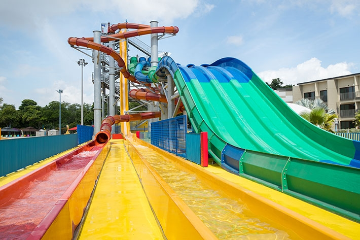
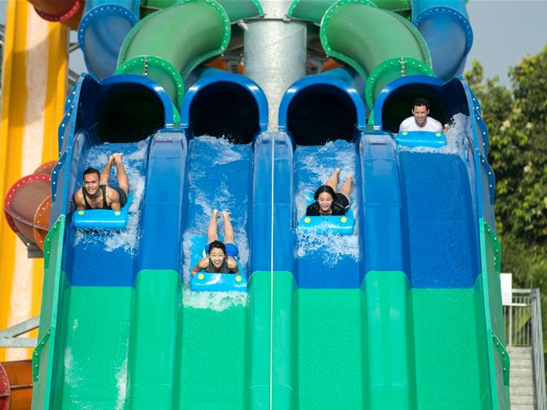
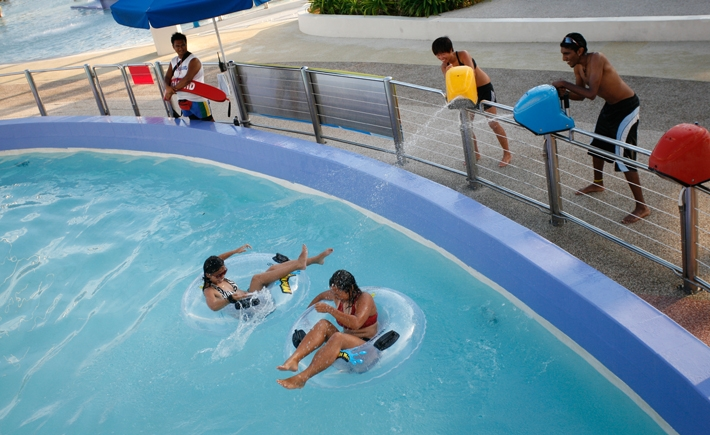
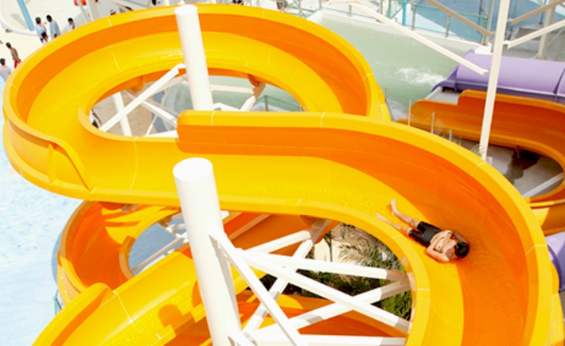
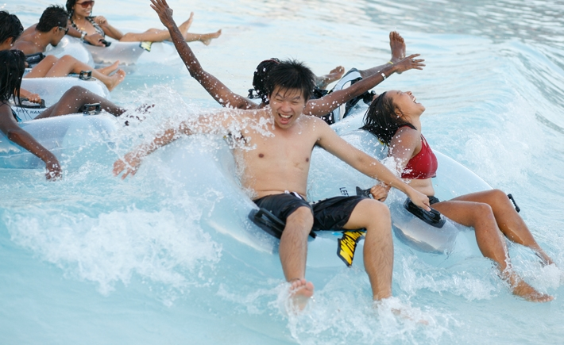

-
FREE FALL WATER SLIDES Challenge yourself in this adrenaline-rushing experience. Take the plunge down a near-vertical drop at speeds of up to 50 feet per second on one of Asia's longest free fall water slides.
Bring your game on and experience this fast and extreme attraction for yourself! You will barely have time to scream as you go on this thrilling water slide and end with a big splash. -
JACUZZI POOL & OUTDOOR SPA 
Fluid jets to rub and ease the kinks in your muscles plus a bubbly massage that soothes your aches in this pool with a jacuzzi waterfall.Unwind, stop and catch your breath in the big jacuzzi pool, our answer to tired bodies in need of recharging - it can even be the centre of a family event!
So choose a nice spot, sit back and let the water do its work. Literally. -
KIDZ ZONE WATER THEME PARK 
Give the young ones a taste of a wilder world at the all-new kids' water paradise, filled with exhilarating pint-sized versions of the big rides such as Royal Flush and Kraken Racers, designed to provide maximum entertainment to the little ones.
Our exciting outdoor wet play area is great as a children's activities play area, suitable for toddlers and children of all ages to frolic around in a safe and fun environment. Have a fantastic water park experience with your tiniest members of the family -
KRAKEN RACERS GIANT WATER SLIDES Fear the kraken!
Feel the adrenaline as you zip down the slide lanes on Singapore's first four-lane mat racer giant water slide. Bring competitive thrill to a whole new level and experience the extreme thrill of high speed large water slides.
This multi-lane racer is one of the popular water slides in Singapore. Grab a blue mat, climb the stairs up 12 metres and zip down the water slippery slide in friendly competition with your family and friends! -
PROFESSOR'S PLAYGROUND 
Let your kids slide and swing the splashy style in Professor's Playground!
Designed around the theme of an experimental laboratory, this outdoor water slide playground packs a myriad of classic fixtures such as slides, ladders, water cannons and even water fountains.
At a comfortable depth of 0.3 metres, it's safe even for the most zealous child keen on exploring and taking charge of his/her surroundings in this water park playground with family water slides suitable for toddler of all ages. One thing's for sure, playing in the water has never been this fun! -
ROYAL FLUSH WATER RAFTING TUNNEL SLIDE 
Experience Asia's first hybrid ride featuring both the Behemoth BOWL40 and TornadoWAVE rides in one! The orange-and-yellow attraction combines a bowl and a zero-gravity wall in one ride.
Gather a group of four on this splashing water slide, sit on a raft, as you drop into the enormous bowl and slide down the curves at manic speeds, swooshing up a wall and down a tunnel. Holler your lungs out on our water park raft ride as you drop into the ginormous bowl and get ready for the flush! This ride is also a great choice for a family raft ride. -
SHIOK RIVER LONG SWIMMING POOL Spanning 335 metres in length, Shiok River skirts the perimeter of the park like an outdoor swimming pool, meandering through a variety of lush landscape that will leave you soothed and invigorated. Take a breather, go with the flow and let the trip wash away your care. It's a great way to escape from all the commotion and noise of everyday life.
Tubes are optional for those who prefer to travel at their own pace. You can snooze your way through a dream-filled journey in this long pool that will last as long as you want. Or take a quick dip to recharge your batteries before plunging into some of our more exciting rides again! -
SPLASH PLAY KIDDIE SWIMMING POOL WITH SPRINKLERS 
Families with young ones can enjoy the all-new kiddie pool with sprinklers where little ones can slosh around the low water with fun jets and water sprays. This family friendly pool is also equipped with water tunnels, water cannons and a little play structure in the middle.
Experience an exciting outdoor kiddie water play area where toddlers and children of all ages can frolic around in a safe and fun family environment. Have a blast with your tiniest members of the family. -
THE WATER WORK GIANT WATER SLIDE 
This twisty outdoor water slide comes in two parts: open and covered body slides, each with its own unique route and distinctive angles. This outdoor water slide is perfect for friendly races to see who can hit the landing pool first! Take on the challenge with your family and friends.
-
TORPEDO EXTREME THRILL WATER RIDE 
The first of its kind in Singapore, the all-new Torpedo ride ejects you from an 18-metre high capsule right into a heart-stopping free fall, which propels you straight into a manic trajectory of hair raising twists and turns at mind-numbing speeds of up to 70km/hr.
Get set for jaw-dropping, hair raising and adrenalin-pumping adventures on Torpedo Singapore as you drop from six-stories up and go on a 360 degrees loop in this thrilling ride.
Step into a launch chamber and wait for the trap door under your feet to open to experience one of the more intense drop slides out there as you plummet down the huge fall and make some tight twists and turns! -
TSUNAMI GIANT WAVE POOL 
Tsunami combines the best of waves and the sea to give you the excitement of the surf under controlled conditions. Without the hassle of choppy swells or dangerous currents, even kids can feel totally at ease in this giant wave pool.Take your time to enjoy as you lie back, soak up the sun and fun for a guaranteed splashing fun-filled day!
Our Tsunami swimming pool has a depth of 1.8m at the far end, and it remains one of the more popular wave pools in Singapore suitable for the entire family. -
VORTEX HIGH SPEED WATER SLIDE 
Get sucked into a world of extreme turns and curves at absolute break-neck speeds! Singapore's first high-speed 360° extreme loops ride will syphon you into a towering maze of turns and curves at breakneck speeds.
This enclosed flume ride starts 18 metres above the ground and will take you on twists and turns. This high speed slide will send thrill-seekers splashing down with speeds of up to 600 meters per minute.
Experience the extreme thrill of water tunnel slides today!